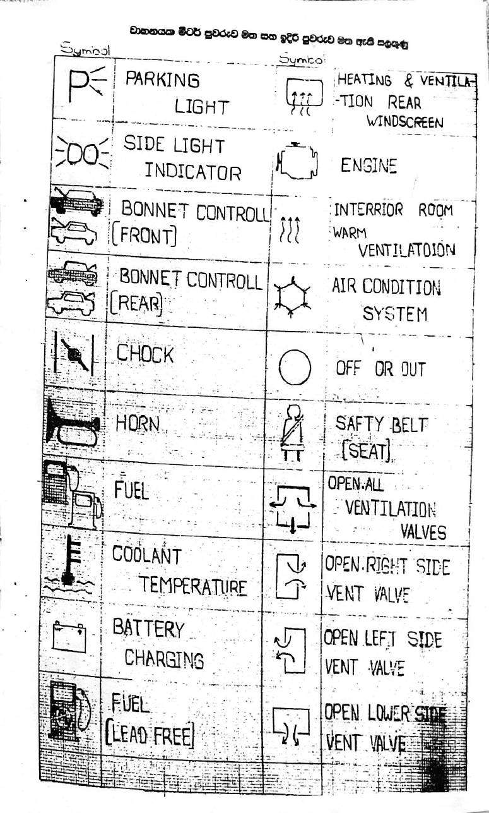

රියදුරු බලපත්ර ලිඛිත විභාගය (සැහැල්ලු වාහන)Sri Lanka Driving Licence Written Exam Practice – DMT
ප්රශ්න 40 (සියල්ල නිල DMT ප්රශ්න පොතෙන්) · සමත් වීමට 30/40 · ඉලක්කය 40/40 · සෑම වාරයකම නව ප්රශ්න පත්රයක්
සිංහල English
⚠️ English is an unofficial translation made by this site. The official DMT question book is in Sinhala (and Tamil), and no official English version could be found, so the real English exam paper may use different wording. If something looks wrong, check the Sinhala version or report it.
📝 ප්රශ්න පත්රය
❌ වැරදුණු ප්රශ්න (0)
🚸 සියලු සංඥා
📖 DMT පොත + සියලු ප්රශ්න
📌 කෙටි සටහන්
💬 යෝජනා / නිවැරදි කිරීම්
විභාග ක්රමය පුහුණු ක්රමය
0/40
60:00
ඉදිරිපත් කරන්න
නව ප්රශ්න පත්රයක්
0
වැඩිපුරම වැරදුණු ප්රශ්න මුලට
අලුත් අනුපිළිවෙළකට
සියල්ල මකන්න
ඕනෑම අංශයකින් වැරදුණු ප්රශ්න මෙහි ස්වයංක්රීයව එකතු වේ – එකම ප්රශ්නය කිහිප වරක් නොපෙන්වයි. මෙහිදී නිවැරදිව පිළිතුරු දුන් විට එය ලැයිස්තුවෙන් ඉවත් වේ. (ඔබේ උපාංගයේ බ්රවුසරයේ සුරැකේ.)
අර්ථ සඟවන්න (ස්වයං පරීක්ෂණය)
අලුත් අනුපිළිවෙළකට
ප්රගතිය මකන්න
ප්රශ්න පත්රයේ සැකැස්ම
මුළු ප්රශ්න සංඛ්යාව 45 – සංඥා 20 · මාර්ග සලකුණු 10 · මාර්ග නීති 10 · තාක්ෂණික දැනුම 5 සැහැල්ලු වාහන ප්රශ්න 40ට පිළිතුරු දෙන්න · අවම වශයෙන් 30ක් නිවැරදි විය යුතුය බර වාහන ප්රශ්න 45ටම පිළිතුරු දෙන්න · අවම වශයෙන් 35ක් නිවැරදි විය යුතුය
සංඥා හඳුනා ගැනීම
අනතුරු හැඟවීමේ සංඥා කහ පැහැති දියමන්ති (කොණ මත සිටුවූ හතරැස්) හැඩය · කළු දාරය · කළු සංකේතය. (රතු දාර සහිත සුදු ත්රිකෝණ නොවේ!) තහනම් සංඥා සුදු රවුම · රතු වළල්ල · කළු සංකේතය · බොහෝ විට රතු ඇල තීරුවක් අනිවාර්ය සංඥා සුදු රවුම · රතු වළල්ල · කළු ඊතලය · රතු ඇල තීරුවක් නැත (ශ්රී ලංකාවේ නිල් රවුම් නොවේ) නැවැත්වීම් සංඥා නිල් රවුම · රතු වළල්ල: තනි තීරුවක් = වාහන නැවැත්වීම තහනම් · X = නැවැත්වීම සහ නතර කිරීම තහනම් · I = ඔත්තේ දින · II = ඉරට්ටේ දින සීමාකාරී සංඥා රතු වළල්ල තුළ අංක – වේගය, පළල, උස, බර නවතිනු (STOP) රතු අෂ්ටාස්රය – සෑම විටම සම්පූර්ණයෙන් නවතින්න මාර්ගය ඉඩදෙනු යටිකුරු ත්රිකෝණය – මාර්ගය පැහැදිලි නම් නොනවතා යා හැක තොරතුරු සංඥා සෘජුකෝණාස්ර · කොළ = ජාතික මහාමාර්ග · නිල් = අධිවේගී මාර්ග / පහසුකම්
වේග සීමා (කි.මී./පැය)
මෝටර් රථ, ද්විත්ව කාර්ය වාහන, මෝටර් සයිකල් නාගරික 50 · නාගරික නොවන 70 · අධිවේගී 100 බස් රථ, ලොරි රථ නාගරික 50 · නාගරික නොවන 60 · අධිවේගී 100 ත්රිරෝද රථ, ට්රැක්ටර් සෑම ප්රදේශයකම 40 · අධිවේගී මාර්ගයේ තහනම් අධිවේගී මාර්ගයේ තහනම් පදිකයින්, ත්රිරෝද රථ, මෝටර් සයිකල්, ට්රැක්ටර්, පාපැදි · ඇතුල්වීමේ/පිටවීමේ මාර්ග 60
මාර්ග සලකුණු
කැඩුණු මැද රේඛාව ආරක්ෂිත නම් ඉස්සර කිරීමට / දකුණට හැරවීමට හරහා යා හැක තනි අඛණ්ඩ රේඛාව දකුණට හැරවීමට හෝ හදිසි අනතුරක් වළක්වා ගැනීමට පමණි · ඉස්සර කිරීම තහනම් ද්විත්ව අඛණ්ඩ රේඛා කිසි විටෙකත් හරහා නොයන්න (දකුණට හැරවීමට පවා නොවේ) මිශ්ර රේඛා ඔබේ පස ඇති රේඛාව අනුව තීරණය වේ – කැඩුණු රේඛාවක් නම් ඉස්සර කළ හැක අනතුරු හැඟවීමේ රේඛාව දිගු කැබලි – ඉදිරියේ අඛණ්ඩ රේඛාවක් (අවම 50 m කට පෙර) කහ රේඛා (දාරයේ) තනි රේඛාව = වාහන නැවැත්වීම තහනම් · ද්විත්ව රේඛා = නැවැත්වීම, පැටවීම/බෑම සහ නතර කිරීම තහනම් කහ මංසන්ධි කොටුව පිටවීම පැහැදිලි නම් පමණක් ඇතුල් වන්න (දකුණට හැරවීම හැර)
වාහන නැවැත්වීම තහනම් දුර ප්රමාණ
ප්රධාන මාර්ග මංසන්ධිය 25 m සුළු මාර්ග මංසන්ධිය 10 m බස් නැවතුම / පදික මාරුව පෙර 30 m · පසු 15 m රථ වාහන ආලෝක සංඥා සහිත මංසන්ධිය පෙර 50 m
මාර්ග නීති සහ රථ වාහන ආලෝක සංඥා
ආලෝක සංඥා අනුපිළිවෙළ රතු → රතු+කහ → කොළ → කහ → රතු පාලන ප්රමුඛතාව පොලිස් නිලධාරී > ආලෝක සංඥා > මාර්ග සංඥා/සලකුණු > දකුණු පසින් එන වාහනවලට මාර්ගය ඉඩ දීම පාලනයක් නොමැති මංසන්ධිය දකුණු පසින් පැමිණෙන වාහනයට මාර්ගය ඉඩ දෙන්න වටරවුම දක්ෂිණාවර්තව (මැද දූපත දකුණු පසින්) · දකුණු පසින් පැමිණෙන වාහනවලට මාර්ගය ඉඩ දෙන්න කඳු මාර්ග (සංඥා නොමැති) කන්ද නගින වාහනයට ප්රමුඛතාව අත් සංඥා (දකුණු අත) කෙළින් පිටතට දිගු කිරීම = දකුණට · ඉහළ පහළ සෙලවීම = වේගය අඩු කිරීම/නැවැත්වීම · වාමාවර්තව කරකැවීම = වමට රැගෙන යා යුතු ලේඛන රියදුරු බලපත්රය, රක්ෂණ සහතිකය (අවම තෙවන පාර්ශ්ව), ආදායම් බලපත්රය (ඉදිරිපස වම් පස), දුම් පරීක්ෂණ සහතිකය ජංගම දුරකථනය රිය පදවන විට කිසි විටෙකත් භාවිත නොකළ යුතුය අනතුරක් සිදු වූ විට නවතින්න · තුවාලකරු රෝහලට ගෙන යන්න · ළඟම පොලිසියට වහාම දැනුම් දෙන්න හදිසි දුරකථන අංක පොලිසිය 119 · ගිලන් රථ 1990 · අධිවේගී මාර්ග 1969
මීටර් පුවරුවේ සංකේත (DMT පොතෙන්)
වාහනයක මීටර් පුවරුව මත සහ ඉදිරි පුවරුව මත ඇති සලකුණු.

තාක්ෂණික දැනුම
රතු අනතුරු ලාම්පු තෙල් පීඩනය, තිරිංග, එන්ජින් උෂ්ණත්වය, බැටරි – වහාම නවතින්න කහ අනතුරු ලාම්පු Check engine, ABS, ටයර් පීඩනය, ඉන්ධන අඩු වීම – ඉක්මනින් පරීක්ෂා කරවා ගන්න ටයර් ගෙවී යාම මැද ගෙවී යාම = වාතය වැඩි වීම · දෙදාර ගෙවී යාම = වාතය අඩු වීම · එක් දාරයක් ගෙවී යාම = රෝද පෙළගැස්ම (alignment) බෑවුමකින් පහළට අඩු ගියරයක් භාවිත කරන්න – එන්ජින් තිරිංග · නියුට්රල් ගියරයෙන් ධාවනය නොකරන්න
💬 යෝජනා පෙට්ටිය සහ නිවැරදි කිරීම්
ප්රශ්නයක පිළිතුරක් වැරදි යැයි සිතන්නේද? සිංහල වචන අපැහැදිලිද? නැතහොත් නව අදහසක් තිබේද? අප වෙත දන්වන්න – සෑම වාර්තාවක්ම පරීක්ෂා කර වෙබ් අඩවිය යාවත්කාලීන කරනු ලැබේ.
නිවැරදි කිරීමක් යවන විට
ප්රශ්නය «DMT පොත – ප්රශ්න අංක ..» ලෙස අංකය සඳහන් කරන්න (ප්රශ්නයේ «⚑ වාර්තා කරන්න» බොත්තම භාවිත කළ විට මෙය ස්වයංක්රීයව පිරවේ). නිවැරදි පිළිතුර ඔබ නිවැරදි යැයි සිතන පිළිතුර සහ හේතුව. මූලාශ්රය හැකි නම් DMT අත්පොත, ගැසට් පත්රය හෝ වෙනත් සාක්ෂියක්.